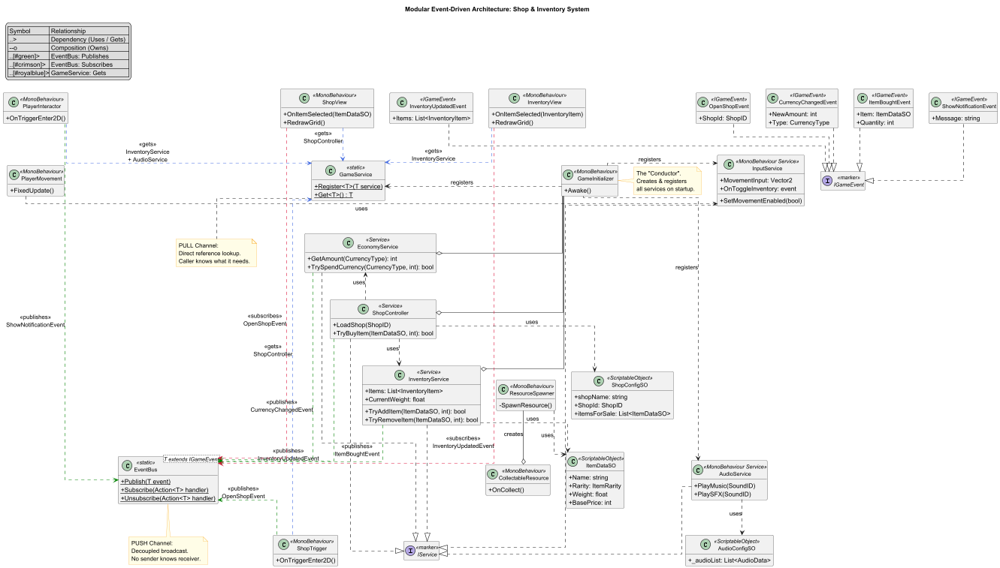
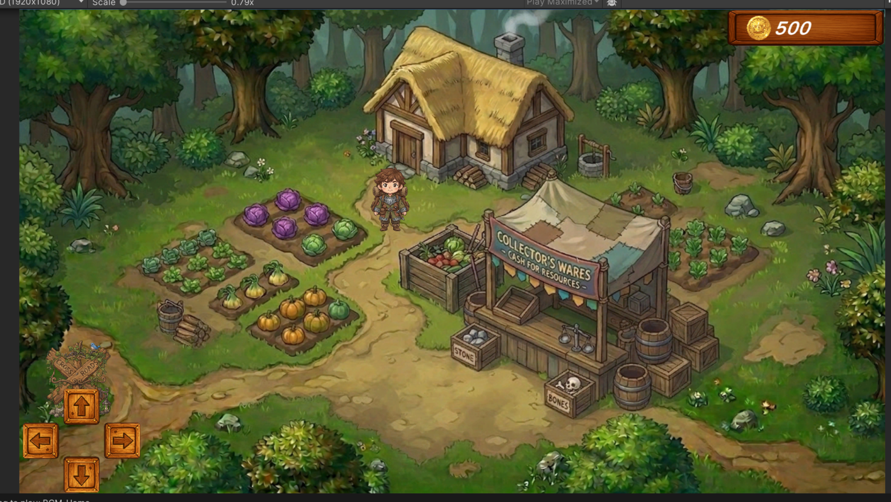
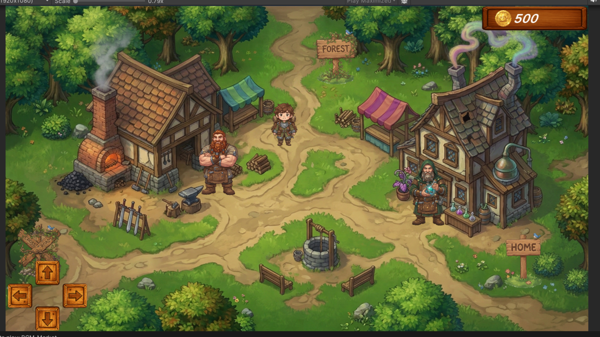
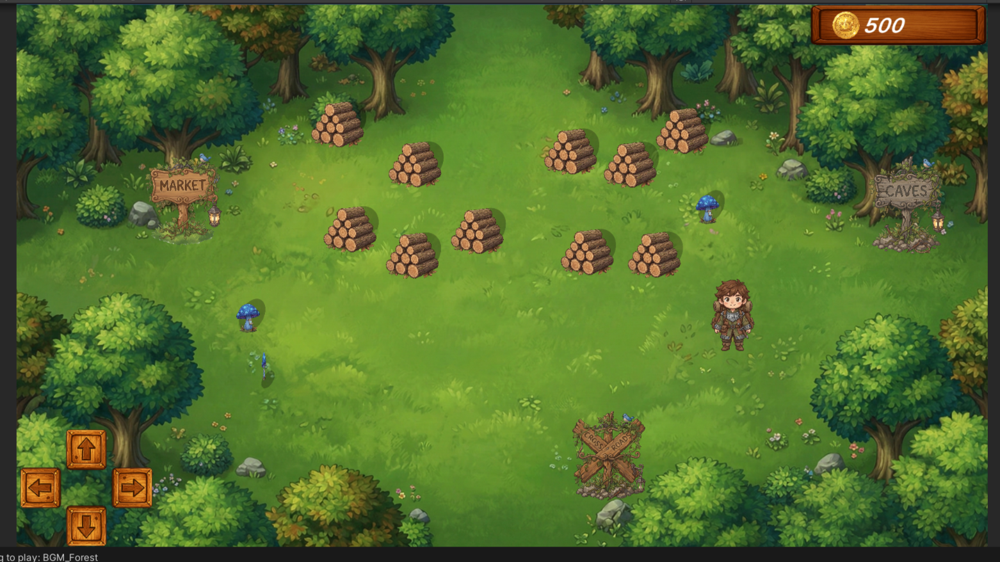
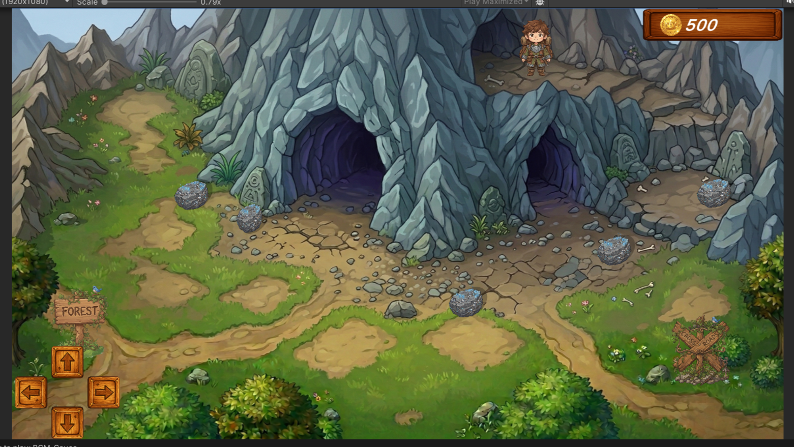
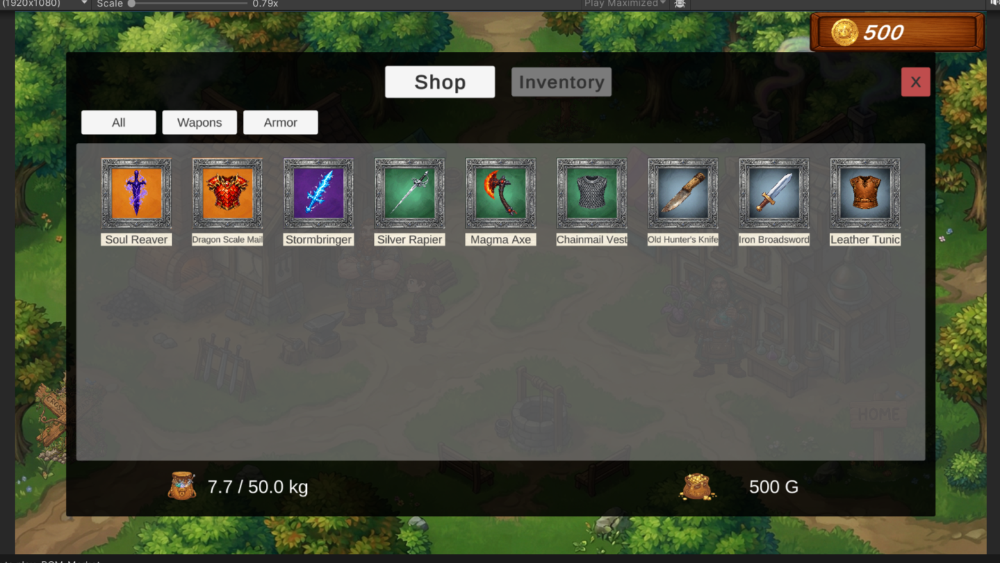
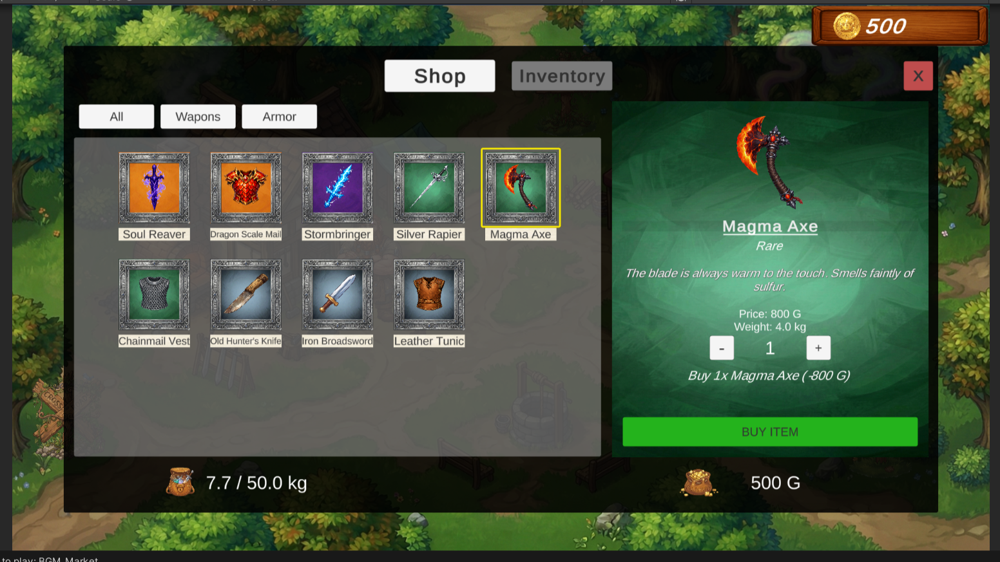
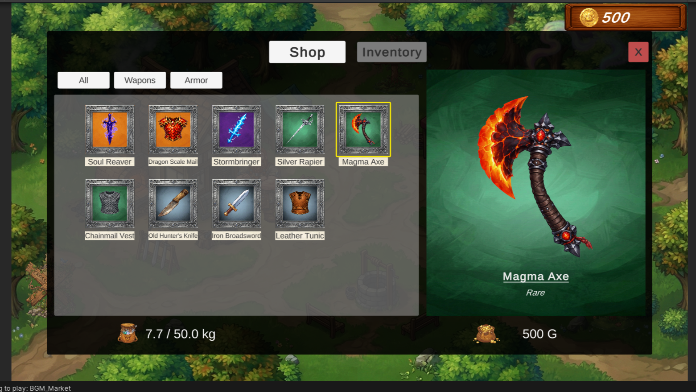

Gameplay & Architecture Demo
Project Overview
Cozy Trader is a robust 2D RPG inventory, gathering, and economy module. Unlike a quick prototype, I built this project specifically to demonstrate production-ready software engineering.
My primary goal was maintainability and team collaboration. By utilizing ScriptableObjects and moving away from tightly coupled MonoBehaviours, I ensured that game designers and artists can easily add new items, configure shop prices, or redesign UI layouts without ever needing a programmer to untangle "spaghetti code."
System Architecture: Designing for Scale
Before writing a single line of code, I mapped out the system's data flow. By utilizing a Service Locator and a centralized Event Bus, I established a strict separation of concerns. The Game Logic (Services & Controllers) operates completely independently of the Presentation Layer (UI Views).
This means the UI simply "listens" to the game state. If a UI artist accidentally deletes a UI panel, the game's economy math doesn't crash—the system simply keeps running.

System Architecture UML Diagram (Click to Enlarge)
Technical Mindset & Overcoming Challenges
Building a scalable system requires looking past simple tutorials and addressing real software engineering challenges. Here is how I solved specific bottlenecks in this project:
-
Defeating Race Conditions: Unity's default
Awake()andStart()initialization can be unpredictable, causing systems to crash if they try to access data that hasn't loaded yet. I bypassed this by creating a centralizedGameInitializerbootstrapper that utilizes Constructor Injection. This explicitly controls the startup sequence, guaranteeing that all core services are fully formed before the UI is allowed to access them. -
Zero-Allocation Memory Management: Event-driven systems are great, but they can cause massive Garbage Collection (GC) spikes and frame drops if heavily used. I engineered the custom Event Bus to strictly use
structs(value types) for event payloads instead of classes. This generates zero heap allocation when broadcasting messages, keeping performance rock-solid. - Object Pooling for Web/Mobile: Continuously instantiating and destroying world objects (like gathering wood or dropping items) destroys performance. I implemented a generic Object Pool for the resource spawner, ensuring items are recycled efficiently, making the game smooth even on mobile browsers.
Project Gallery






